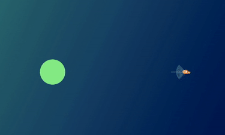

Abstract
Modeling flocks has a wide variety of applications. It can be used to model molecular behavior in science, simulate crowds to envision bottlenecks in a building plan, mimic natural movement of animal behavior, and can be used by animators to fill easily scenes with large masses of other characters. Therefore simulations with flocks or boids (bird-oid objects) can be adapted to fit many different purposes.
In the following project, I simulated a visually realistic depiction of a school of fish (although this can be adapted to other creatures and items) using particle systems and the simple forces of classic flocks. I also applied obstacle avoidance and fish feeding features.
Basic flocking behavior
Basic flocking behavior is dictated by the steering of the fish or the direction that they choose to move in. Craig Reynolds outlined the movement of boids as being comprised of 3 simple steering behaviors. [Images from Craig Reynolds]

Separation
Steer to avoid crowding neighbors

Alignment
Steer towards the average heading of neighbors

Cohesion
Steer to move toward the average position of neighbors
In addition, one thing to consider is the field of view of each fish. In reality, the fish cannot be perfectly informed of their surroundings. The fish can only make their decisions based off of what they know: their sight. The following images from AI for Game Developers depict the field of view for boids. The size affects the level of awareness that the fish has of its surroundings. Additionally, I considered the depth of field: how far the fish could see along that field of view. The fish will only call another fish its "neighbor" (and thus consider it when steering itself) if it is within view.
Narrow field of view
Medium field of view
Wide field of view
For each fish, I computed the steering directions according to each of the aforementioned factors, making sure to only consider neighbors (fish within view). The tricky part was combining them and finding a good balance of all three of the factors, as there can only be one final steering direction. I found that with equal weighting, the fish had a tendency to collide still, so I assigned greater weight to the separation steering direction. In addition, since I felt that the visual of the fish moving in one direction was important to conveying a visually realistic animation, I also assigned greater weight to the alignment steering direction.
However, I did notice that a drawback of the higher weighting of the separation steering was that the fish on the outer edges of the school had a tendency to stray. To try and fix that, I dynamically changed the velocity of the fish. If the average position of all of its neighbors was very far, the fish increased its velocity in order to catch up with the school. I found that this helped in getting the fish to align themselves to other schools quicker if they ended up straying.
However, there were some situations where the fish would be conflicted and want to go in two different directions and they would keep turning from side to side. To minimize this effect, the final steering direction is the halfvector between the current steering direction and unit vector combining the flocking components.
Only Separation
The fish move in random directions until they see a fish that they must dodge.
Only Alignment
The fish all move in one direction, but swim independently rather than in one unit.
Only Cohesion
The fish move to the same position until they converge to one spot.
Combination of all 3 factors
Effect of FOV on flocking behavior
In the animations below, the fish are depicted as particles. This is just so that I could get more boids on the screen to better see the differences. On the left, the smaller FOV and shorter depth of field is more susceptible to the formation of local flocks as the boids are unable to see further. On the other hand, on the left, with a wider FOV and larger depth of field, we see a large flock form with all the boids since the boids are aware of more neighbors and thus they can all come together with that information.
Small FOV & Short Depth of Field

Wide FOV & Large Depth of Field
Fish Food
To implement the behavior of fish feeding, I first updated the GUI so that clicking would add a new piece of food where the mouse clicked.
To change the behavior of the fish when food was present, I again considered only the food within the fish's field of view. If there was no food in view, the fish would use the default flocking steering outlined in the previous section. The fish would choose to move towards the food that is closest to it. Therefore when there is a lot of food, the fish will move in a way that maximizes its ability to reach as much food as possible.
I computed the direction that the fish needed to go in to reach the closest piece of food by simply creating a unit vector from the fish's position to the food's position. In order to apply use that vector to compute the final direction that the fish would ultimately go in, I applied a weighted average between the separation steering vector and the vector towards the food. I gave the separation a greater weight as with all the fish moving towards the food it tends to cause collisions. I also chose to omit the cohesion and alignment factors of flocking behavior as the movement towards the food would inherently cause that behavior since all the fish are moving towards the same position: the food.
In order for the fish to "eat" the food once it reached it, I checked to see if the fish was within a certain distance from the food using a small constant (to account for the fact that the fish is much larger than its position/centroid). If the fish was close enough, I considered the food "eaten" and removed it from the GUI and from memory. As a result, the fish would return to their normal flocking behavior once they ate the food.
Effect of different FOVs on feeding behavior
The results below depict how the fish will only swim towards food within their field of view. As expected, the fish with a wider field of view are better at scavenging food.
Basic Feeding
Demonstration of feeding with only one fish with the GUI's steering mode on.

Small FOV
With a small field of view, the fish can see food directly in front but will often miss food.
Wide FOV
The fish with the wider FOV is better at spotting food and will swerve significantly reach it.
Obstacle Avoidance
For obstacle avoidance, I used a combination of techniques outlined in this article and techniques borrowed from raytracing. First, I checked to see if the fish would eventually hit an obstacle, given the current steering direction, by applying an intersection test with the obstacle. In this case, the "ray" was cast from the fish towards the obstacle. Since my obstacles were spheres, I applied the ray intersection test with spheres outlined in the raytracing lecture. The obstacle that was most threatening and therefore most important to dodge, was the one with closest intersection point (the black dot in the image below) among all possible obstacle intersections.
One the most threatening object was identified, the fish need to redirect themselves to avoid it.
I calculated an avoidance vector (in red), a perpendicular vector to the original direction. The length of the avoidance vector is the radius of the obstacle plus a small constant (so that the fish doesn't get too close to the object). The avoidance vector is used to calculate the point where the green and red vector touch, as the new direction is a vector from the fish's position to that point.
I chose to only use the new direction (that avoids the obstacle) and the separation direction to compute the final steering direction, for the same reasoning as with the food.
The method for obstacle avoidance is pretty effective but not 100% effective, as there are some cases where the fish may be stuck between the obstacle and another fish. The gif below includes my results with the viewing mode changed to steering to see the aforementioned method at work. For viewing purposes, I froze the frame that shows the green new direction vector. In the actual simulation, there is no pause at this stage, as seen in the video following it.
 Edge casesIn the case of food AND an obstacle, the fish will prioritize the closest object. In this case, the fish will still be able to eat food that is very close to the obstacle, and then swerve. In addition, if the food is inside an obstacle or adequately close to it such that the fish will not be able to swerve without collision, the fish will ignore the food.
Room for Improvement
As I worked on the project I observed possible ways to improve it that I did not have time to implement it given the timeline of the course. Here are a few of them:
- Improve runtime of neighbor search by partitioning the scene
- Dynamically change the velocity of fish to further reduce collisions
References
- Flocks, Herds, and Schools: A Distributed Behavioral Model, Craig Reynolds
- AI for Game Developers by Glenn Seemann, David M Bourg: Chapter 4. Flocking
- 3 Simple Rules of Flocking Behaviors: Alignment, Cohesion, and Separation, Vijay Pemmaraju
- Understanding Steering Behaviors, Fernando Bevilacqua
- Simulating Bird Flock Behavior in Python Using Boids, Rohola Zandie